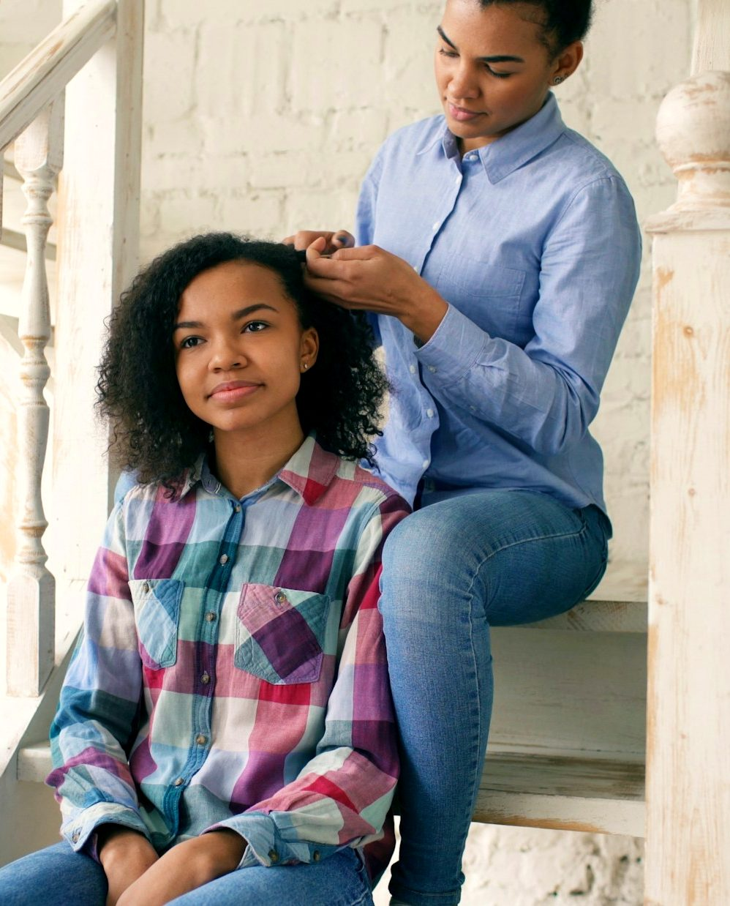

If your mom or dad has borderline personality disorder, or you think they might, you
have likely asked all three. Most writing about BPD is for the person who has it, or for a
husband or wife. Very little is written for the teenager down the hall. This guide is for
you.
It covers what BPD is, why your parent can seem like two different people, and the
things research says help kids in your position. Every research claim is cited at the
back. The example conversations were written for this guide, built from those findings,
and they are a starting point you can put in your own words.
If someone is in danger right now
Call or text 988, any hour of the day. If someone could die, call 911. More numbers
are near the end of this guide.
What is BPD, in plain words?
Borderline personality disorder is a mental illness that affects how a person handles
emotions. Feelings arrive faster, hit harder and take longer to fade than they do for
most people. Relationships feel high-stakes, because the person is often terrified of
being left.
Doctors diagnose it from a list of nine traits. A person needs five or more. Here is the
list in everyday words.
Working hard to avoid being left, even when nobody is leaving.
Relationships that swing between adoring someone and resenting them.
A shaky sense of who they are.
Impulsive choices that can hurt them, like overspending or reckless driving.
Self-harm, or threats or attempts of suicide.
Moods that change fast, often within hours.
A long-lasting feeling of emptiness.
Intense anger that is hard to control.
Under heavy stress, feeling paranoid or unreal.
Each circle is one trait from the list above. Both parents qualify for the
diagnosis, and the only trait they share is number six. Five or more out of nine can be
met in 256 different ways.
So your parent has their own version of BPD. You understand it by learning their
patterns: what sets them off, how long it lasts, and what helps them come back down.
Why does my parent seem like two different people?
Researchers who study mothers with BPD describe a pattern. The same parent can swing
between two modes (Stepp and colleagues, 2012). In one, they are controlling and harsh:
criticizing, checking up on you, angry about small things. In the other, they pull away.
They are distant, shut in their room, hard to reach.
A lot of kids decide one of these is the real parent and the other is an act. Both are
real. Both come from the same illness, and neither one is a verdict on you.
BPD also pushes people to see others in all-or-nothing terms. On Monday you are the only
one who understands them. On Tuesday you are selfish and ungrateful. You stayed the same
person between Monday and Tuesday. Their view of you swung, and it will likely swing
back.
Did I cause this?
No. A saying from Al-Anon, a support group for families, fits here: you
didn't cause it, you can't control it, and you can't cure it.
BPD grows out of a mix of genes and life experience, usually long before a person has
children. Nothing you said at dinner caused it, and no amount of perfect behavior will
cure it.
How understanding the illness helps you
Of everything in this guide, this has the most research behind it. A review of 37
studies found that kids whose parent has a mental illness do better when someone explains
the illness in words they can follow (Van Schoors and colleagues, 2023). In programs that
taught kids about a parent's illness, kids were about a third as likely to develop
depression or anxiety over the next year or so (Havinga and colleagues, 2021). Those programs
were for parents with depression or anxiety. Research on BPD families is newer, and
understanding is still the best place to start.
Here is what changes once you understand it.
You stop taking the blame. A blowup becomes a symptom you can name.
Your parent becomes more predictable. You learn the triggers and roughly how
long a bad stretch lasts.
You have words for it. “My mom has an illness called BPD” is a
sentence you can say to a counselor or a friend.
You can see the person underneath. Your parent is more than their worst
days.
What tends to set things off?
The biggest trigger is fear of being left. People with BPD watch closely for signs that
someone is pulling away, and they react hard when they think they see one.
That puts teenagers in a tough spot. Growing up means pulling away a little. You close
your door, you want time with friends, you keep some things private. All of that is normal.
To a parent with BPD, each one can feel like the first step of being abandoned. No study has
tested this exact point. It follows from how the illness works, and it explains a lot of
fights that seem to come from nowhere.
Knowing this won't stop the reaction. You can see it coming, though, and you can choose
how you respond.
You are heading out with friends and your parent is upset
Instead of
“Why do you always do this? I'm allowed to have a life.”
Try
“I'm going to Maya's until nine. I'll text you from there, and I'll
be home at nine.”
A set time and a promise to check in speak to the fear underneath. An
argument about your rights skips right past it.
Your parent says you don't love them
Instead of
“That's ridiculous. You're being crazy.”
Try
“I do love you. I can tell you're really scared right now.”
While the feeling is this strong, arguing the facts goes nowhere. Naming
the feeling often lowers the temperature.
Your parent goes silent after an argument
Instead of
Following them from room to room until they talk.
Try
“I'm going to do my homework. I'm here when you want to talk.”
You can't pull someone out of a shutdown. Telling them where you are, and
that you are staying, is enough.
What can I actually do?
More than you might think. Research on kids whose parent has a mental
illness keeps finding the same few things that protect them, and you can start most of
them this week.
Pick one steady adult
It could be your other parent, a grandparent, an aunt or uncle, a coach, a teacher or
your school counselor. Who it is matters less than how often you see them. Support that
shows up regularly makes the biggest difference (Van Schoors and colleagues, 2023).
Fill this in with a pencil. One name in the inner ring is a strong start.
Keep your own life going
When researchers asked kids in your position what helped, they named time with friends
and ordinary activities (Bee and colleagues, 2014). Kids who coped by accepting what they
couldn't change, looking for the good in things and taking their mind off it had less
anxiety and depression (Van Schoors and colleagues, 2023). Practice counts as coping. So
does a Friday night with friends. You are allowed to have a good time while things at home
are hard.
Tell one safe person
Kids with a parent who has a mental illness often keep it secret, because they worry
what people will think (Dobener and colleagues, 2022). Carrying that secret alone wears
you down. You don't need to tell everyone. One safe person is enough: a friend you trust,
a relative, a counselor.
A school counselor is a good first choice. Talking with students about hard
things at home is part of the job.
Have I become the parent?
In a review of 14 studies, young people with a parent who had a mental illness described
taking over their parent's job so often that the researchers added a new category to the
standard model of how kids cope (Sawitzki and colleagues, 2025). The name for it is role
reversal.
It looks like calming your parent down every night, keeping the peace between your
parents, running the house, or being the person your parent tells everything. Kids who do
this are often praised for being mature. It is still too much weight for someone your
age.
If the left column sounds like your week, tell your steady adult. Handing one of
those jobs back to a grown-up is a real change.
Should I try to talk my parent into therapy?
You can, and you can also leave it to an adult. Your parent's treatment
belongs to your parent and their doctor.
If you do raise it, research on adults offers a few clues. People who were listened to
without judgment and gently pointed toward help were much more likely to see a doctor or
therapist afterward (Morgan and colleagues, 2025). Most people who skip treatment believe
they don't need it, or want to handle it alone (Mojtabai and colleagues, 2011), so one
conversation rarely settles it. In one study, mothers with BPD said they wanted help being
better parents (Zalewski and colleagues, 2015). That is often a better way in than the
word “disorder.”
Bringing it up for the first time
Instead of
“You need help. I looked it up, and I think you have BPD.”
Try
“I love you, and I can see how hard things have been. Would you
talk to someone? I'd feel better knowing you had support.”
A diagnosis from your own kid lands as an accusation. Worry from your own
kid is much harder to argue with.
In the middle of a fight
Instead of
“If you don't go to therapy, you're going to lose us.”
Try
Saying nothing about therapy until you are both calm.
About one in five parents in one study of public mental health care
feared losing custody of their kids over treatment (Busch and Redlich, 2007). A threat
feeds that fear and makes treatment less likely.
A trusted adult can carry this conversation better than you can. In research trials, a
short family session where a counselor explains the illness to everyone helped kids feel
less anxious (Solantaus and colleagues, 2010). Ask your steady adult whether your parent's
therapist, or a counselor, could set one up.
When home doesn't feel safe
Understanding the illness helps you make sense of your parent's behavior. Being hurt is
still never okay. If a parent hits you, threatens you, or leaves you without food or a
safe place to sleep, tell an adult you trust or call one of these numbers.
Free, confidential, and open all day and night
988 Suicide & Crisis Lifeline: call or text 988. You can call about your parent
or about yourself.
Childhelp National Child Abuse Hotline: call or text 1-800-422-4453.
Crisis Text Line: text HOME to 741741.
If anyone is in immediate danger, call 911.
Will my parent ever recover?

There is real reason for hope.
A review of 19 long-term studies found that remission from BPD, meaning a person no
longer meets the criteria, is common. Once people reach remission, few slip back (Ng
and colleagues, 2016). Treatments such as dialectical behavior therapy, or DBT, were
built specifically for BPD.
Recovery in everyday life, like steady relationships and work, can take longer than
the symptoms do. Your parent may have hard seasons ahead. The illness can still change,
and your family can change with it.
Your own future belongs to you as well. Understanding the illness, a steady adult,
friends, and your own ways of coping are the same things researchers link to kids doing
well when a parent is unwell (Van Schoors and colleagues, 2023). Every one of them is
already in your hands.
Where to start this week
Five small steps. None of them depend on your parent changing.
Write one name in the inner ring of your corner.
Tell that person one true thing about what happens at home.
Make one plan with friends, and keep it.
Pick one job from the adult column and hand it back to a grown-up.
Save 988 and 1-800-422-4453 in your phone.
Meet Marley
This project started with one family trying to make sense of a
diagnosis.
Marley grew up inside a family where emotions ran high and nobody had a word for
why. That question led her to spend a summer buried in clinical research on borderline
personality disorder, and to build this series of guides for other families doing the
same thing hers did.
Each guide is written from the peer-reviewed literature rather than from anecdote,
and every claim is traceable to the sources listed at the back. They are free, and they
are meant to be shared with the people who need them.
“Nobody in my family had the language for what was happening. These guides
are the thing I wish someone had handed us.”
Understanding BPDEvery guide in the series is free at odyssey-jotun.github.io/understanding-bpd
Works cited
American Psychiatric Association. (2022). Diagnostic and Statistical Manual of Mental Disorders (5th ed., text rev.). The nine traits are paraphrased from the criteria for borderline personality disorder.
Stepp, S. D., Whalen, D. J., Pilkonis, P. A., Hipwell, A. E., & Levine, M. D. (2012). Children of mothers with borderline personality disorder: identifying parenting behaviors as potential targets for intervention. Personality Disorders: Theory, Research, and Treatment, 3(1), 76-91. pmc.ncbi.nlm.nih.gov/articles/PMC3268672/
Van Schoors, M., Van Lierde, E., Steeman, K., Verhofstadt, L. L., & Lemmens, G. M. D. (2023). Protective factors enhancing resilience in children of parents with a mental illness: a systematic review. Frontiers in Psychology, 14, 1243784. doi.org/10.3389/fpsyg.2023.1243784
Havinga, P. J., Maciejewski, D. F., Hartman, C. A., Hillegers, M. H. J., Schoevers, R. A., & Penninx, B. W. J. H. (2021). Prevention programmes for children of parents with a mood/anxiety disorder: systematic review of existing programmes and meta-analysis of their efficacy. British Journal of Clinical Psychology, 60(2), 212-251. doi.org/10.1111/bjc.12277
Bee, P., Bower, P., Byford, S., et al. (2014). The clinical effectiveness, cost-effectiveness and acceptability of community-based interventions aimed at improving or maintaining quality of life in children of parents with serious mental illness: a systematic review. Health Technology Assessment, 18(8). doi.org/10.3310/hta18080
Dobener, L.-M., Fahrer, J., Purtscheller, D., Bauer, A., Paul, J. L., & Christiansen, H. (2022). How do children of parents with mental illness experience stigma? A systematic mixed studies review. Frontiers in Psychiatry, 13, 813519. doi.org/10.3389/fpsyt.2022.813519
Sawitzki, M., Kinzenbach, S., Christiansen, H., & Grossheinrich, N. (2025). Systematic review and meta-synthesis: coping strategies of children, adolescents, and young adults of parents with a mental illness. Clinical Child and Family Psychology Review. doi.org/10.1007/s10567-025-00540-8
Morgan, A. J., Wright, J., Mackinnon, A. J., Reavley, N. J., Rossetto, A., Le, L. K.-D., & Jorm, A. F. (2025). Receiving support for mental health problems from family and friends: measurement and impact on mental health, relationships, and help-seeking. PLOS Mental Health. doi.org/10.1371/journal.pmen.0000502
Mojtabai, R., Olfson, M., Sampson, N. A., et al. (2011). Barriers to mental health treatment: results from the National Comorbidity Survey Replication. Psychological Medicine, 41(8), 1751-1761. pmc.ncbi.nlm.nih.gov/articles/PMC3128692/
Zalewski, M., Stepp, S. D., Whalen, D. J., & Scott, L. N. (2015). A qualitative assessment of the parenting challenges and treatment needs of mothers with borderline personality disorder. Journal of Psychotherapy Integration, 25(2), 71-89. pmc.ncbi.nlm.nih.gov/articles/PMC4528980/
Busch, A. B., & Redlich, A. D. (2007). Patients' perception of possible child custody or visitation loss for nonadherence to psychiatric treatment. Psychiatric Services, 58(7), 999-1002. pmc.ncbi.nlm.nih.gov/articles/PMC2030627/
Solantaus, T., Paavonen, E. J., Toikka, S., & Punamäki, R.-L. (2010). Preventive interventions in families with parental depression: children's psychosocial symptoms and prosocial behaviour. European Child & Adolescent Psychiatry, 19(12), 883-892. doi.org/10.1007/s00787-010-0135-3
Ng, F. Y. Y., Bourke, M. E., & Grenyer, B. F. S. (2016). Recovery from borderline personality disorder: a systematic review of the perspectives of consumers, clinicians, family and carers. PLoS ONE, 11(8), e0160515. doi.org/10.1371/journal.pone.0160515
Al-Anon Family Groups. The “three Cs” are a long-standing Al-Anon and Alateen saying. al-anon.org
Substance Abuse and Mental Health Services Administration. 988 Suicide & Crisis Lifeline. samhsa.gov/find-help/988
Childhelp. National Child Abuse Hotline. childhelphotline.org
Most of the research on programs for children studied parents with depression or anxiety; studies of children of parents with BPD are fewer and more recent. The example conversations and the three diagrams were written for this guide. They follow the research above, and they were not themselves tested in a study. Crisis numbers were checked as current at the time of writing.